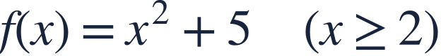
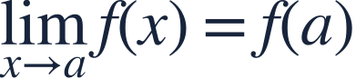
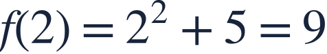

Continuity and discontinuity
연속과 불연속
Continuity requires the nearby value to match the defined value.
연속이려면 가까워지는 값과 정해진 값이 일치해야 합니다.
Continuity requires the nearby value to match the defined value.
연속이려면 가까워지는 값과 정해진 값이 일치해야 합니다.

The other branch is x²+5 for x≥2. Match both sides and the point value.
다른 조각은 x≥2에서 x²+5입니다. 양쪽 극한과 점의 값을 맞추세요.

Check that the value exists, the limit exists, and they agree.
함숫값, 극한의 존재, 두 값의 일치를 차례로 확인합니다.

The branch containing the point determines its actual value.
그 점을 포함하는 조각으로 실제 함숫값을 정합니다.
The left limit must equal the right limit and the value 9.
좌극한이 우극한과 함숫값 9에 같아야 합니다.
Each polynomial piece is continuous elsewhere, so matching the junction finishes the job.
다른 점에서는 각 다항식이 연속이므로 접합점만 맞추면 됩니다.
Fixing a single point can repair a hole, but not a jump between different limits.
한 점의 값을 바꿔 구멍은 메울 수 있지만 점프는 없앨 수 없습니다.
Choose a so that g is continuous at 1.
1에서 연속이 되도록 a를 정하세요.